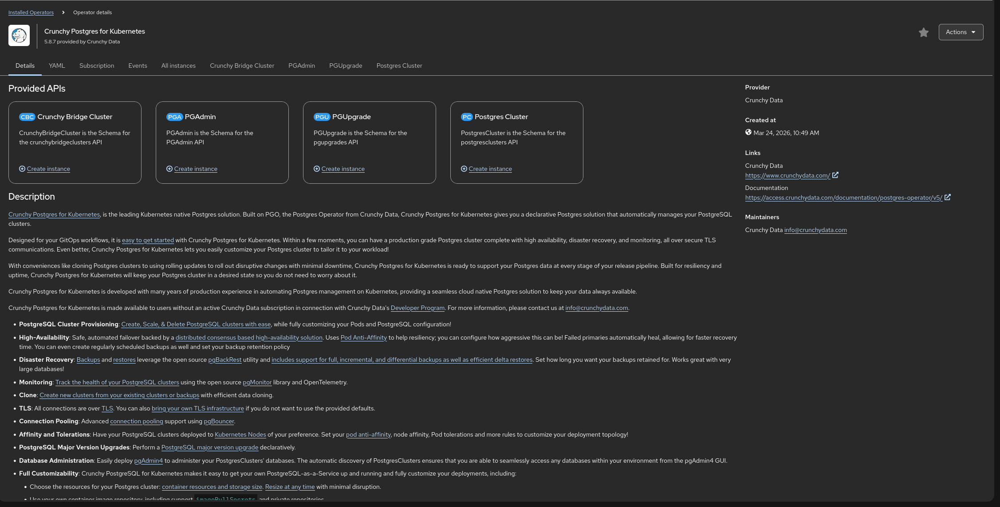
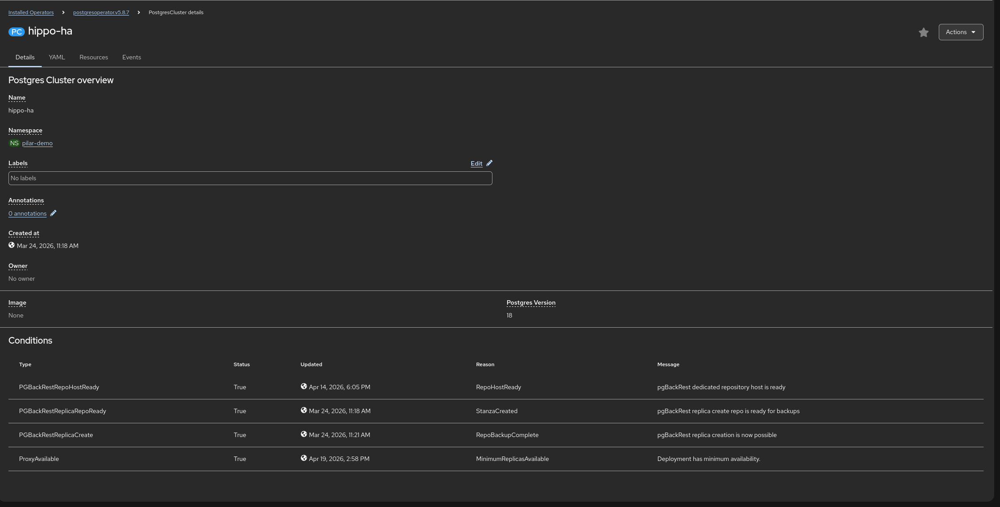
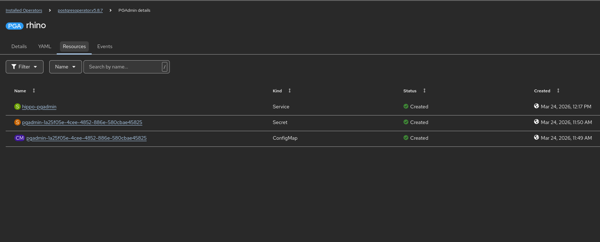

Using Operators - Crunchy PostgreSQL
The example is adapted from https://github.com/CrunchyData/postgres-operator-examples/tree/main
Before starting this part of the demo you need to create a new project to deploy all the Crunchy components.
Go to Home → Projects and click on Create Project.
Deploying Crunchy as an Operator
-
Access the Software Catalog page in
Ecosystem→Catalog. -
Show some of the certified technologies that are in the catalog, as well as the available filters.
-
Filter by
Operators -
Type
Crunchyin the search box -
Click on
Crunchy Postgres for Kubernetes -
Click
Install -
Perform the following changes in the default configuration:
-
Select
Installation mode→A specific namespace in the cluster -
Select the namespace you have created for Crunchy
-
-
Click
Install -
When the operator has installed successfully, click
View Operator

Deploy an HA database
-
Click on
Postgres Cluster→Create instance -
Go to the yaml view and paste this (it is an example configuration):
apiVersion: postgres-operator.crunchydata.com/v1 kind: PostgresCluster metadata: name: hippo-ha spec: postgresVersion: 18 instances: - name: pgha1 replicas: 2 dataVolumeClaimSpec: accessModes: - "ReadWriteOnce" resources: requests: storage: 1Gi affinity: podAntiAffinity: preferredDuringSchedulingIgnoredDuringExecution: - weight: 1 podAffinityTerm: topologyKey: kubernetes.io/hostname labelSelector: matchLabels: postgres-operator.crunchydata.com/cluster: hippo-ha postgres-operator.crunchydata.com/instance-set: pgha1 backups: pgbackrest: repos: - name: repo1 volume: volumeClaimSpec: accessModes: - "ReadWriteOnce" resources: requests: storage: 1Gi proxy: pgBouncer: replicas: 2 affinity: podAntiAffinity: preferredDuringSchedulingIgnoredDuringExecution: - weight: 1 podAffinityTerm: topologyKey: kubernetes.io/hostname labelSelector: matchLabels: postgres-operator.crunchydata.com/cluster: hippo-ha postgres-operator.crunchydata.com/role: pgbouncer -
Check that the resources have been created successfully

Deploy pgAdmin
In order to manage the database, we will deploy PGAdmin.
-
Go back to
Installed Operators→Crunchy Postgres for Kubernetes -
Click on
PGAdmin -
Go to the yaml view and paste this:
apiVersion: postgres-operator.crunchydata.com/v1beta1 kind: PGAdmin metadata: name: rhino spec: users: - username: rhino@example.com role: Administrator passwordRef: name: pgadmin-password-secret key: rhino-password dataVolumeClaimSpec: accessModes: - "ReadWriteOnce" resources: requests: storage: 1Gi serverGroups: - name: supply # An empty selector selects all postgresclusters in the Namespace postgresClusterSelector: {} serviceName: hippo-pgadmin config: settings: AUTHENTICATION_SOURCES: ['internal'] -
Check that the resources have been created successfully

-
Create a route to access the PGAdmin console Go to
Networking→Routes, click onCreate Routeand paste this content:kind: Route apiVersion: route.openshift.io/v1 metadata: name: route-pgadmin spec: to: kind: Service name: hippo-pgadmin weight: 100 port: targetPort: 5050 tls: termination: edge insecureEdgeTerminationPolicy: Redirect wildcardPolicy: None -
Click on the new route to check that PGAdmin is deployed correctly.
-
Create a secret for the PGAdmin console credentials
oc create secret generic pgadmin-password-secret --from-literal=rhino-password=redhat01 -
Access the PGAdmin console with credentials rhino@example.com/redhat01
-
Connect to the database in the PGAdmin console. Look for the password in
Workloads→Secrets→hippo-ha-pguser-hippo-ha -
Create a sample table
Acess PGAdmin and run this script to create a sample table:
CREATE SCHEMA demo_app AUTHORIZATION "hippo-ha";
SET search_path TO demo_app;
CREATE TABLE demo_transactions (
id SERIAL PRIMARY KEY,
customer_name TEXT NOT NULL,
amount DECIMAL(10,2),
processed_at TIMESTAMP DEFAULT CURRENT_TIMESTAMP
);
INSERT INTO demo_transactions (customer_name, amount) VALUES
('Acme Corp', 1500.00),
('Globex', 2450.50),
('Soylent Corp', 99.99);
SELECT * FROM demo_transactions;Self-healing demonstration
In a traditional environment, if a database node fails, someone gets called at 3 AM. On OpenShift, the Operator is our 24/7 SRE.
-
Open the OpenShift Topology View in
Workloads→Topologyand show the Crunchy deployment -
Now go to
Workloads→Pods -
Find the pod labeled
role=master(one with a name similar tohippo-ha-pgha1) -
Delete it.
-
Go back to the topology view and see how the Operator immediately detects the loss. It is currently promoting one of the replicas to 'Primary' and provisioning a new 'Standby' to replace the one you just killed.
-
Go back to
pgAdminand run
SET search_path TO demo_app;
SELECT * FROM demo_transactions;Scale on demand demonstration
Imagine it’s Black Friday. We need more read capacity. Usually, that’s a ticket to the Infra team that takes weeks
-
Go to the PostgresCluster YAML in the Console.
-
Change
replicas: 2toreplicas: 3. -
Click
Save. -
Watch the Topology: A new pod spins up, joins the cluster, and automatically starts replicating data.
-
We just scaled our data layer horizontally in 30 seconds with zero manual configuration.
Security and binding demonstration
Security is usually the hardest part of database management. How do we get credentials to the developers safely?
-
Navigate to
Workloads→Secrets. -
Show the Secret named
hippo-ha-pguser-hippo-ha
The Operator automatically rotated these passwords and stored them in an encrypted Secret. To connect an app, the developer just 'binds' to this Secret. No passwords in Git, no manual credential handling.